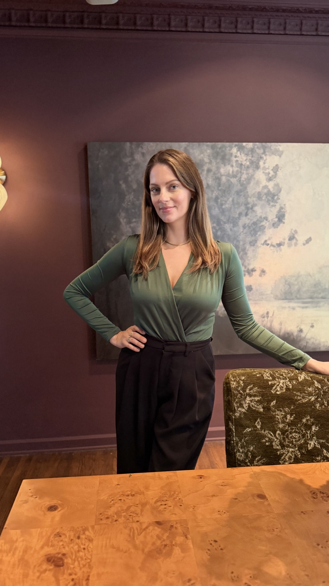
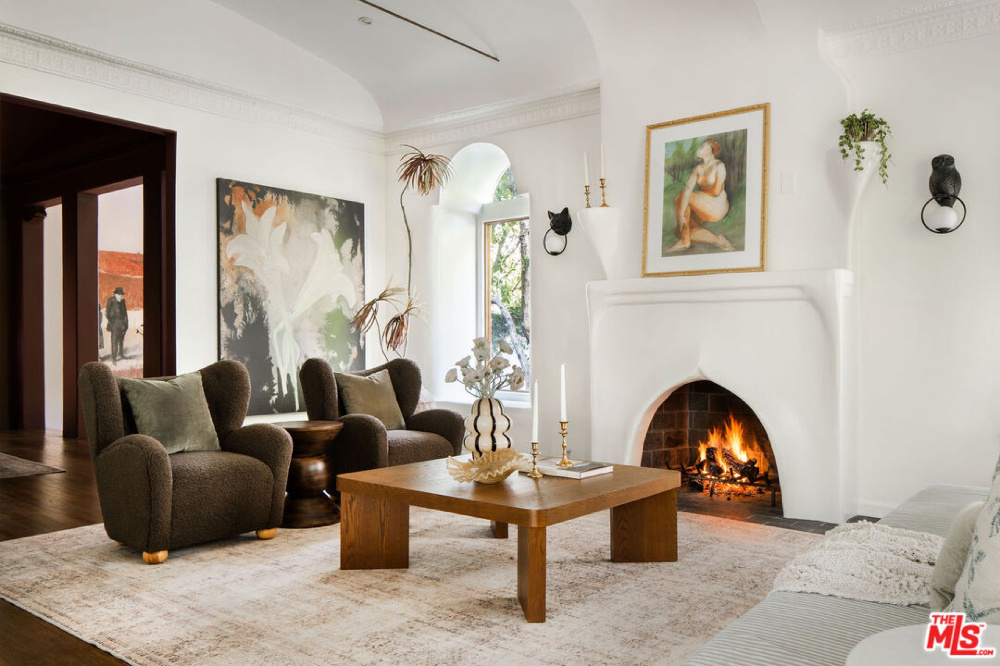
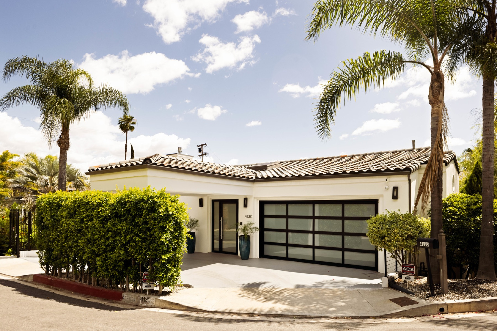
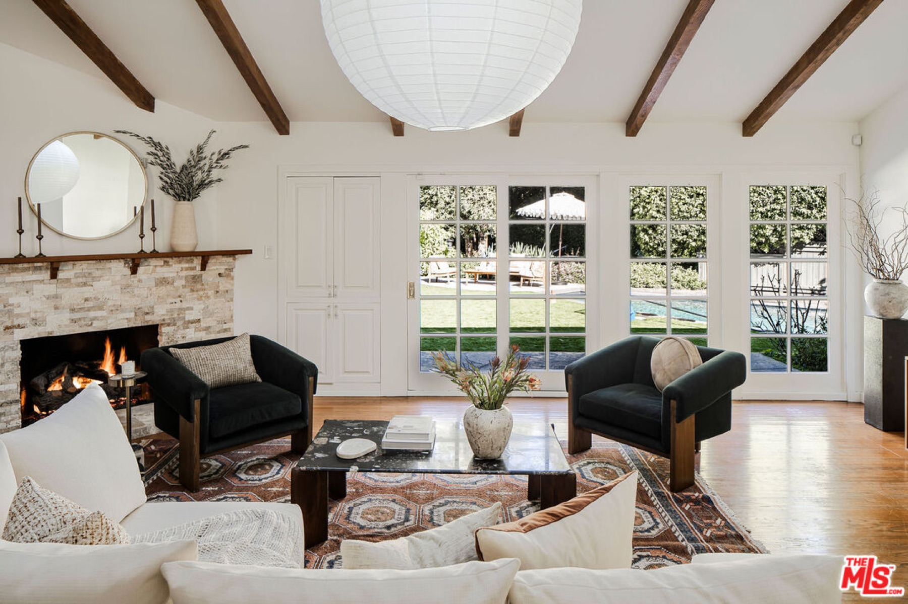

And my birthday Month.

Which, if you know me, you know I fully believe should be celebrated properly. ✨ I mean… it’s the one time of year people wish you well and go out of their way to make you feel special. What’s not to love?
But honestly, one of the greatest gifts I’ve been given this month has been the opportunity to help tell the story of 742 N Sycamore and help find her next great steward and lover. So indulge me and sit back for a second, because this one deserves a moment.
What began as a 1920s Spanish adobe slowly evolved into something deeply artistic and a little otherworldly. Yes, the Christopher Lloyd — aka Doc Brown himself — once owned the property and, alongside artist and architect Robert DeLong, built the guest house and coral stone pool with its bridge while shooting around the era of the Back to the Future films. And as an ’85 baby… if you know, you know why that feels a little extra special. You still catch traces of that playful spirit everywhere, including the molded likeness of Christopher Lloyd’s face built right into the guest house exterior. It’s weird and wonderful.
Then came my client, Diva Zappa, who brought her own magic into the home. She restored and rebuilt the fireplaces so seamlessly they feel as though they’ve always belonged there, while layering in real rose quartz crystal, lush gardens, warmth, and texture without ever losing the soul of the house. Only an artist making her art can do what she did. It’s one of the few homes I’ve walked through that genuinely feels alive. Maybe it’s the crystals embedded into the foundation or the selenite built into the front gate that’s meant to cleanse you as you enter… but I’m definitely feeling the love this year.
Happy another trip around the sun to me. ☀️ And thanks for listening.
Places I’d Go Again — Tre Lune
Tried Tre Lune this week and it feels very “old Hollywood Italian dinner” in the best way. It’s the Hollywood outpost of the longtime Montecito favorite, and you can tell they leaned into that slightly glamorous, leisurely Italian energy instead of trying too hard to be the newest trendy thing. Think long lunches that accidentally become dinner, negronis in the middle of the afternoon, tableside pasta, warm lighting, and a room full of people clearly lingering on purpose. Is Hollywood getting cool again? I think so. The cacio e pepe is one of the signature dishes for a reason, and I had the Spaghetti alla Lenticche which was surprisingly fresh and flavorful. The space itself feels polished without being overly scene-y. It’s also right on Sycamore, which makes it feel tucked into that little pocket of Hollywood that still feels surprisingly neighborhood-y. Very good spot for a slower dinner, a date night, or pretending for two hours that you live in Italy instead of sitting in LA traffic.
Curated for you
- City note — The city is buzzing about the newly expanded D Line subway extension finally opening — people are calling it a huge shift for LA transit and connectivity, especially heading into the World Cup and Olympics years. It’s one of those “LA is evolving” moments that actually feels tangible.
- City note — LA officially entered jacaranda season — aka the few magical weeks each year when the city turns purple and everyone suddenly becomes a photographer. Of course, it also means a collective increase in car washes thanks to the flower-covered streets… but honestly? Worth it. We love a little beauty with minor inconvenience in LA.
- Did you know? Over the past 25 years, the US population has grown by around 25%. Our neighbor, Canada, has seen 36% growth, Mexico 34%, and Australia 45%.
- Did you know? AI-altered photos have spawned a new term: housefishing, using deliberately doctored listing photos designed to reel in buyers. California has responded with a law requiring disclosure of digital alterations, and other states could follow suit. Please and thank you.
What’s happening in LA?
- With fairly mild weather that supports consuming frozen treats year-round, it’s always a good time for ice cream, soft serve, or gelato in Los Angeles — flush with options that go far beyond vanilla, with globally inspired flavors and even dairy-free delights.
- Just in time for jacaranda season, the new fine dining restaurant Jacaranda just opened on Melrose from Michelin-starred chef Daniel Patterson — the timing lines up with peak jacaranda bloom season across LA right now. Very “LA in May” coded.
- Hollywood, the beaches, the Hills, the Valleys, and the wide boulevards chock-full of cars — it’s all part of LA’s sun-baked concrete charm, and this guide makes it easy to navigate the city’s most vibrant restaurants.
Featured listings




- Hollywood — 742 N Sycamore Ave, 90038. 3 BD · 3 BA · 3,439 SF · $2,799,000. A once-in-a-lifetime offering, this previously celebrity-owned, gated 1920s Spanish adobe compound blends artistry, intention and privacy in the heart of Hollywood. Main house (~2,083 sf, 2 bed/2 bath) with two en-suite bedrooms, paired with a detached two-story guest house (~1,356 sf, 1 bed/1 bath). At one point home to Christopher Lloyd, carries a playful, artistic spirit throughout. Travertine and fossilized coral stone, rare real quartz crystal kitchen countertops, quartz crystal walled steam shower in the primary suite.
- Los Feliz — 4130 Parva Ave, 90027. 5 BD · 6 BA · 5,492 SF · $4,499,000. Highly coveted Los Feliz, north of the boulevard, masterclass in modern luxury and architectural elegance. Soaring vaulted ceilings, open-concept design, expansive sliding glass walls, chef’s kitchen with top-of-the-line appliances.
- Hollywood Beach — 3445 Ocean Dr, 93035. 4 BD · 4 BA · 2,794 SF · $3,995,000. Oceanfront living, just north of Malibu and south of Santa Barbara, panoramic ocean views from nearly every room, fully furnished three-story coastal residence.
- Toluca Lake — 10225 Valley Spring Ln, 91602. 3 BD · 3 BA · 3,128 SF · $2,997,000. Oversized 14,715 sq ft lot across from Lakeside Golf Club, one of the most sought-after streets in the San Fernando Valley, vaulted wood-beamed ceilings, multiple fireplaces, French doors throughout.
I help buyers and sellers navigate the Los Angeles market with clarity and care — and I stay really close to what’s happening, what’s new, and what’s worth paying attention to.
Julia Zonshine REALTOR® | DRE# 02246696
M: 818.859.0762 | julia.zonshine@compass.com | @HouseofZonshine